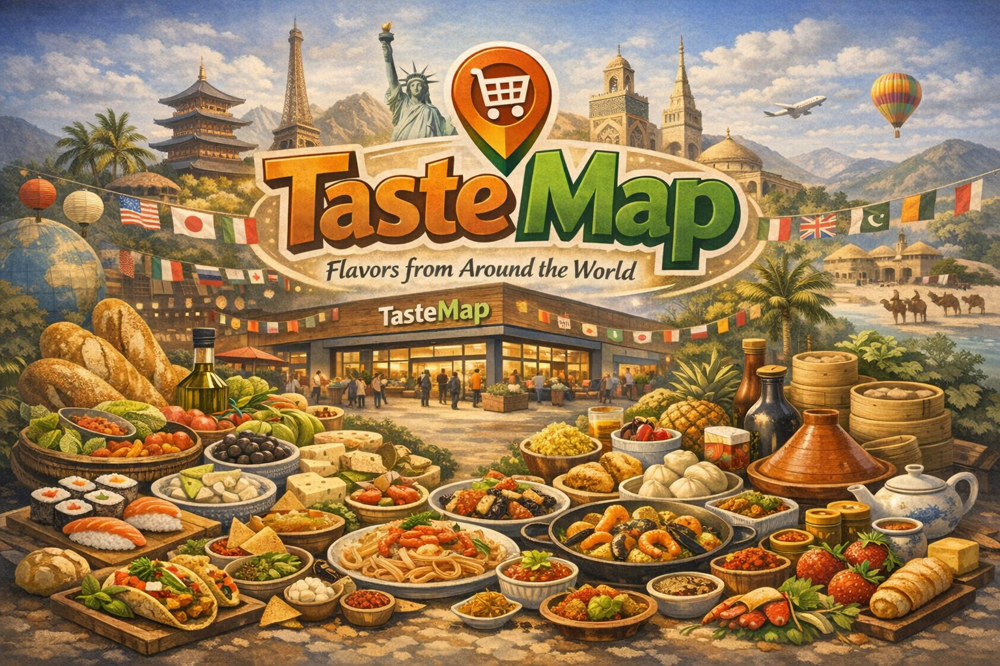
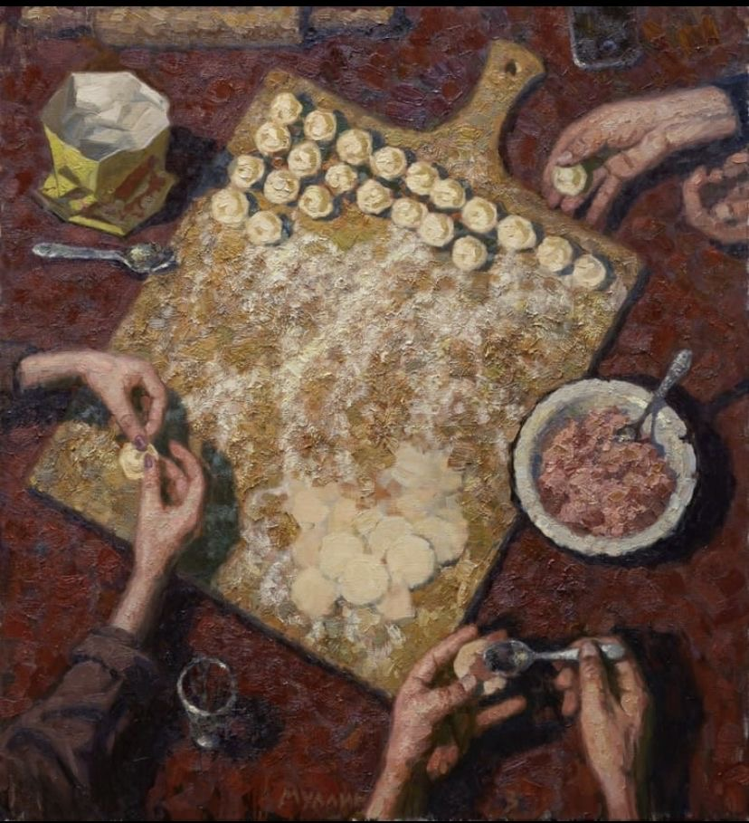
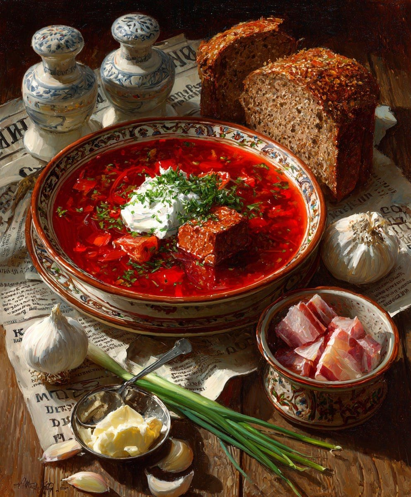
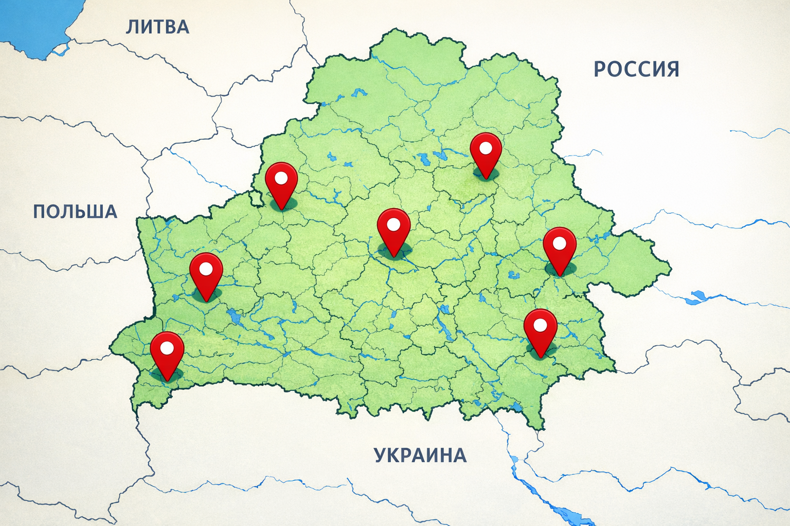

🥗 Мы — то, что мы едим
Сегодня ритм жизни стал таким быстрым, что у многих просто не остаётся времени на вдумчивый выбор продуктов. Мы постоянно спешим: учёба, работа, дела, встречи. И в итоге рацион формируется не осознанно, а «как получится». Но ведь питание — это основа нашего самочувствия, энергии и настроения.


🛒 Быстрый выбор — правильный выбор.
Мы заботимся о том, чтобы у вас всегда был доступ к свежим продуктам и удобному сервису. Вы выбираете, что подходит вашему образу жизни, а мы делаем этот выбор максимально быстрым и понятным.
TasteMap — это сеть супермаркетов
TasteMap — это сеть супермаркетов, которая помогает людям открывать вкус своего региона. Мы верим, что еда — это не просто набор продуктов, а отражение привычек, культуры и маленьких традиций, которые делают каждый регион уникальным.
Это не просто покупки, это возможность попробовать что-то новое или найти достойную замену привычным продуктам. TasteMap делает выбор проще, быстрее и интереснее. Мы помогаем вам ориентироваться в огромном мире вкусов, чтобы каждый поход в магазин превращался в маленькое открытие.

- г. Минск, ул. Академика Купревича 3
- г. Витебск, пр-т Московский 130к1
- г. Могилев, пр-т Мира 6
- г. Брест, ул. Пионерская 42
- г. Гродно, пр-т Янки Купалы 15
- г. Сморгонь, ул. Каминского 34
- г. Гомель, ул. Кирова 7